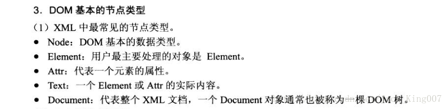

02dom解析
DOM是一种用于XML文档的对象模型，可用于直接访问XML文档的各个部分，通过DOM将XML文档作为一个树状的结构，这种树状的结构成为节点树

第一步 新建类DOM解析类
package com.xiaoxin.xml.DOM;
import java.io.InputStream;
import java.util.ArrayList;
import java.util.List;
import javax.xml.parsers.DocumentBuilder;
import javax.xml.parsers.DocumentBuilderFactory;
import org.w3c.dom.Document;
import org.w3c.dom.Element;
import org.w3c.dom.Node;
import org.w3c.dom.NodeList;
import com.xiaoxin.xml.bean.Person;
public class Dom {
public static List<Person> getPersons(InputStream inStream)
throws Exception {
// 1.用一个集合来放东西
List<Person> persons = new ArrayList<Person>();
// 2.DocumentBuilderFactory该对象将创建DocumentBuilder
DocumentBuilderFactory factory = DocumentBuilderFactory.newInstance();
// 设置去掉空格的方法
factory.setIgnoringElementContentWhitespace(true);
// 3.DocumentBuilder 将实际进行解析以创建Document
DocumentBuilder builder = factory.newDocumentBuilder();
// 4.将文件路径进行解析
Document document = builder.parse(inStream);
// 5.返回文档的根元素
Element root = document.getDocumentElement();
// 6.取出某个特定的元素。一开始以为它的返回值是一个数组，结果，大错特错。它返回的是一个 DOM 对象，可以遍历，有 length
// 属性，但不是数组。
NodeList personNodes = root.getElementsByTagName("person");
//开始遍历整个XML
for (int i = 0; i < personNodes.getLength(); i++) {
Element perElement = (Element) personNodes.item(i);
//对给定的Node返回给定名称的属性，并且是interger类型的
int id = new Integer(perElement.getAttribute("id"));
Person person = new Person();
//设置ID的属性
person.setId(id);
NodeList childNodes = perElement.getChildNodes();
for (int y = 0; y < childNodes.getLength(); y++) {
if (childNodes.item(y).getNodeType() == Node.ELEMENT_NODE)
;
{
if ("name".equals(childNodes.item(y).getNodeName())) {
String name = childNodes.item(y).getFirstChild()
.getNodeValue();
person.setName(name);
} else if ("age".equals(childNodes.item(y).getNodeName())) {
String age = childNodes.item(y).getFirstChild()
.getNodeValue();
person.setAge(new Short(age));
}
}
}
persons.add(person);
}
inStream.close();
return persons;
}
}
第二部 测试代码 与SAX测试代码是相差不大的
package com.xiaoxin.xml.DOM;
import java.io.InputStream;
import java.util.List;
import com.xiaoxin.xml.bean.Person;
import android.test.AndroidTestCase;
import android.util.Log;
public class DomPersonService extends AndroidTestCase {
private static final String TAG = "DomPersonService";
public void testDom() throws Throwable {
// 因为XML在src文件中 可以直接反射到路径 inputStream
InputStream inputStream = this.getClass().getClassLoader()
.getResourceAsStream("xiaoxin.xml");
List<Person>persons=Dom.getPersons(inputStream);
for(Person person:persons){
Log.i(TAG, person.toString());
}
}
}